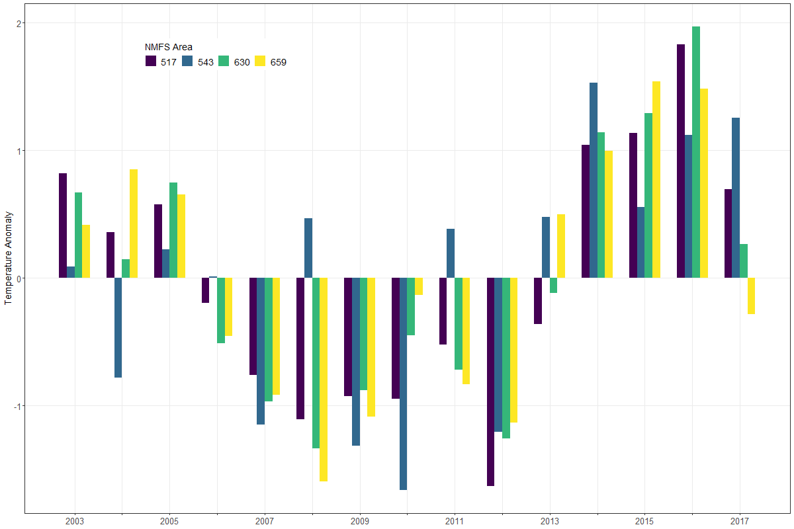

Spatial and temporal visualizations of satellite-derived sea surface temperatures for Alaska fishery management areas

Jordan T. Watson, Alaska Fisheries Science Center
 http://orcid.org/0000-0002-1686-0377
http://orcid.org/0000-0002-1686-0377
Jordan.Watson@noaa.gov 3 3 JUN 2019 10.28966/PSESV.2019.003
A common pursuit in fisheries research is to understand the relationship between fisheries data and the surrounding environment. However, environmental data are often unavailable at similar scales as fishery data. To mitigate this disconnect, more than 6,000 daily satellite datasets (containing ~ 24 billion individual temperature records) from 2003—2019 were rectified with spatial fisheries management areas. This union facilitates a smoother linkage between satellite-derived sea surface temperatures and the spatial management units often used by state and federal scientists in Alaska. Visualizations of these data help users to explore the spatial (e.g., state and federal management grids) and temporal (e.g., daily, weekly, monthly) scales of the data and allow users to filter, download, and visualize trends. For users in regions outside of Alaska, R code can easily be modified for different spatial regions to integrate NASA or other environmental satellite data with spatially-explicit fishery information.
Eastern Bering Sea, Gulf of Alaska, Aleutian Islands, spatial data, sea surface temperature